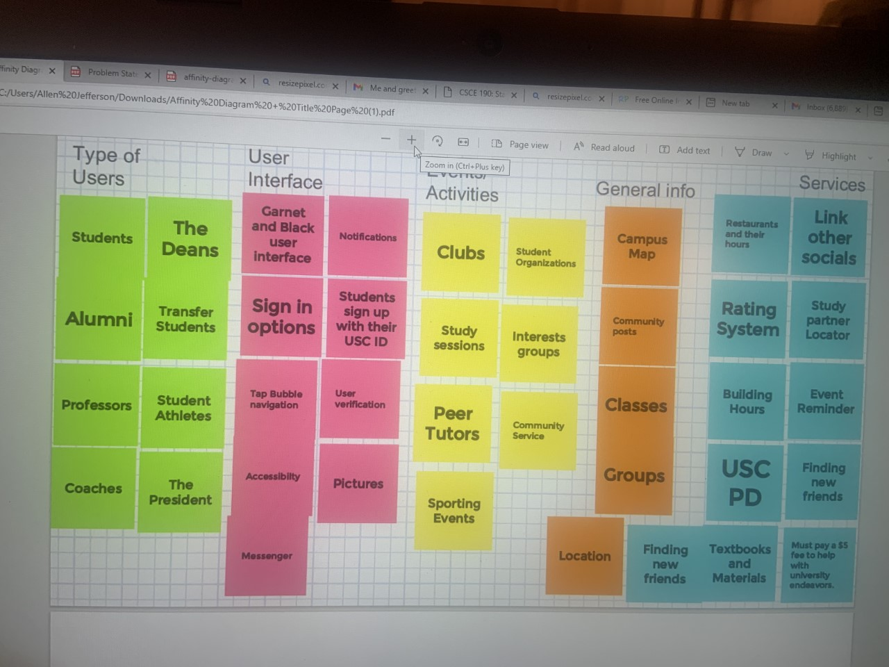
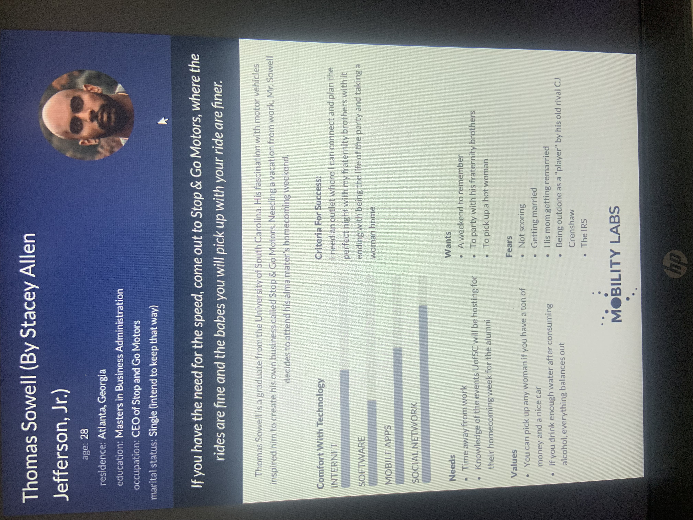
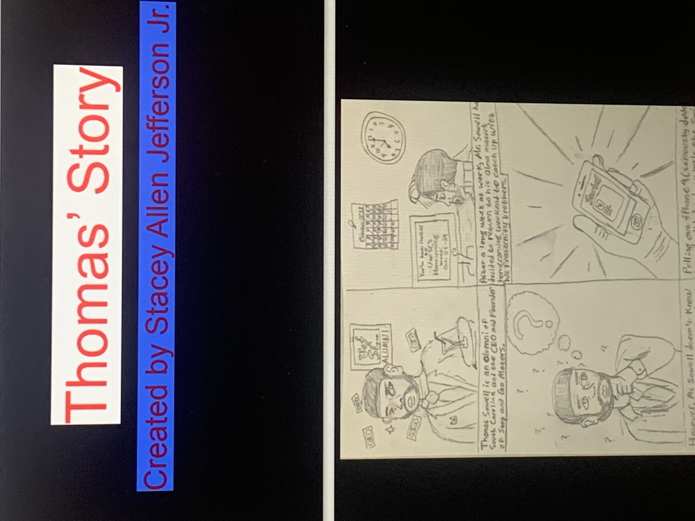
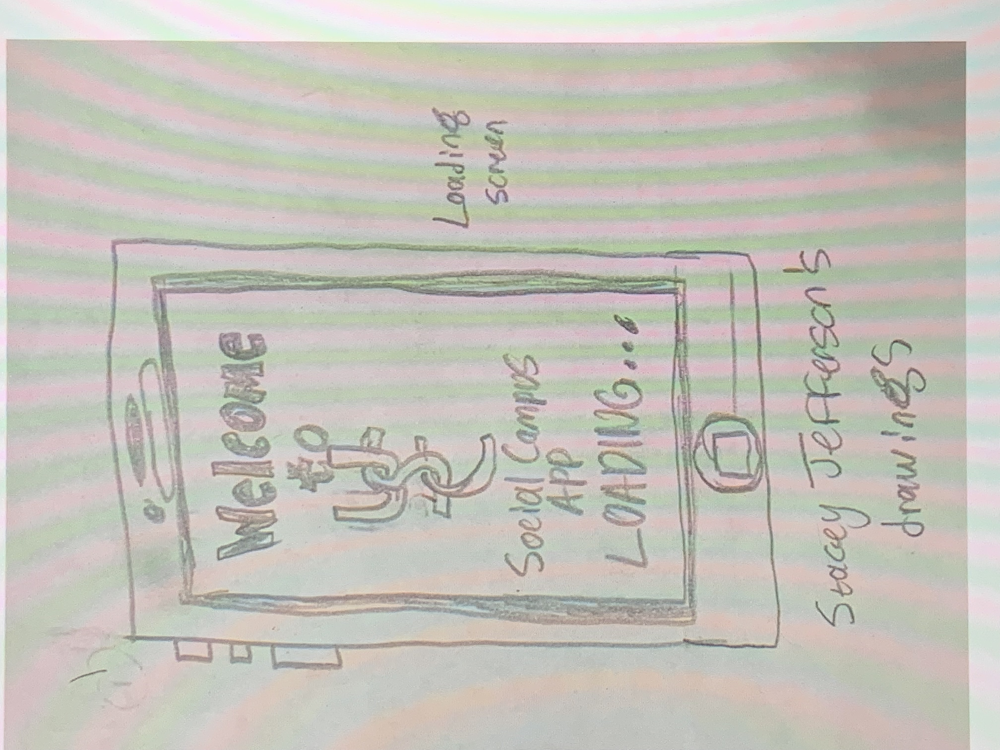
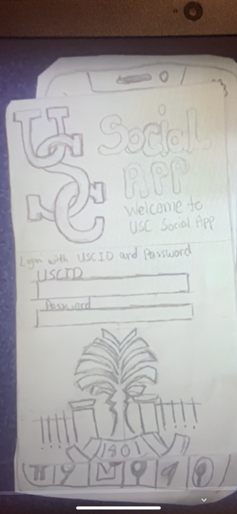

Problem Statement: Social Campus App

You are a new student on UofSC's campus, and you want to start networking with others, but you are having trouble connecting with people, or you are having a problem with finding things to do on campus. Our solution is to create an app that allows users to connect with their peers, professors, alumni, clubs, workplaces, etc… on campus.
Affinity Diagram: Social Campus App
My teammates and I brainstorm together to create an affinity diagram for our social media app. This was a very fun process as it allowed us to bring out our creativeness. This will be useful in my future entreprenurial endeavors.
Personas: 5 Personas for the Social Campus App
Five personas need help finding out what they can do on the University of South Carolina's campus for different reasons. All of their questions can be solved with the Social Campus App.
Storyboard: Social Campus App
My teammates and I came together to create storyboards based on our personas and their problems.
Personas: 5 Personas for the Social Campus App
Our vision of how the social campus app can potentially look.
Paper Prototype: Social Campus App
A walkthrough video of how my teammates and I feel the Social Campus App can look.